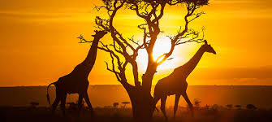
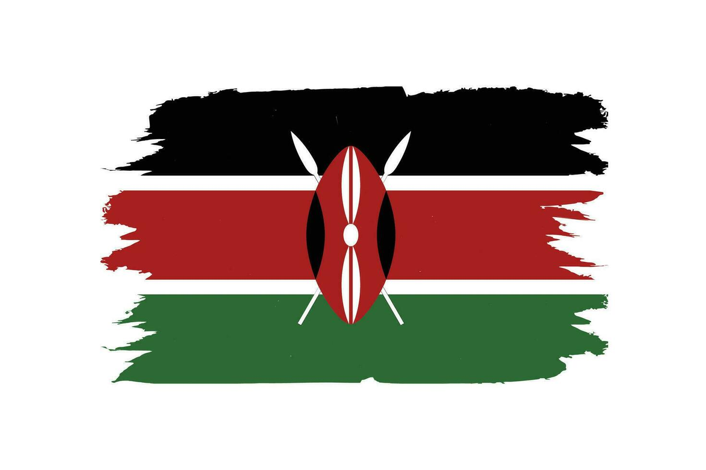

About Kenya
Kenya, officially the Republic of Kenya, is a country located in East Africa. With an estimated population of more than 52.4 million as of mid-2024, Kenya is the 27th-most-populous country in the world and the 7th most populous in Africa. Kenya's capital and largest city is Nairobi. The second-largest and oldest city is Mombasa, a major port city located on Mombasa Island. Other major cities within the country include Kisumu, Nakuru and Eldoret. Going clockwise Kenya is bordered by South Sudan to the northwest (though much of that border includes the disputed Ilemi Triangle), Ethiopia to the north, Somalia to the east, the Indian Ocean to the southeast, Tanzania to the southwest, and Lake Victoria and Uganda to the west.
History of Kenya
A part of Eastern Africa, the territory of what is known as Kenya has seen human habitation since the beginning of the Lower Paleolithic. The Bantu expansion from a West African centre of dispersal reached the area by the 1st millennium AD. With the borders of the modern state at the crossroads of the Bantu, Nilo-Saharan and Afro-Asiatic ethno-linguistic areas of Africa, Kenya is a multi-ethnic state.
People and Culture
Kenya boasts a rich tapestry of cultural and ethnic diversity, with approximately 42 distinct tribes, each possessing unique languages, customs, and traditions. While Swahili and English serve as national languages, the plethora of indigenous languages spoken across the country further highlights this diversity. This diversity is also evident in various aspects of life, including traditional clothing, marriage ceremonies, and other cultural practices.
Ethnic Groups and Languages
- Kenya is home to a multitude of ethnic groups, with the Kikuyu, Luhya, Luo, Kalenjin, Kamba, and Somali being among the largest.
- These groups speak various languages belonging to the Bantu, Nilotic, and Cushitic language families.
- While Swahili and English are widely spoken, many Kenyans also speak their native languages, which are integral to their cultural identity.
Cultural Practices
- Each tribe has its own distinct traditions, including unique styles of clothing, marriage ceremonies, and other cultural practices.
- The Maasai are known for their vibrant shukas (cloth wraps), beadwork, and traditional dances, while the Swahili culture, found along the coast, reflects a blend of African, Arab, and Persian influences.
- The Kalenjin are renowned for producing world-class athletes, particularly long-distance runners, highlighting their cultural emphasis on physical fitness and endurance.
National Integration and Diversity
- Kenya has navigated its diversity since gaining independence in 1963, striving to foster national unity despite ethnic differences.
- Factors like education, the use of a national language (English), participation in cultural festivals, intermarriages, and economic interdependence contribute to national cohesion.
- However, ethnic-based political parties and past interethnic conflicts highlight the challenges of maintaining unity amidst diversity.